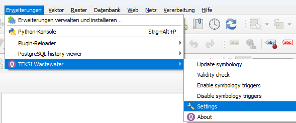

In order to use the AG-64/AG-96 extension, the database must be initialized accordingly. See initialize-extensions for further explanations.
5.2.1.1. Enable AG-64/AG-96 Interlis Imports and Exports
In the plugin, there is a hidden functionality that allows importing and exporting AG-64/AG-96 interlis files. In order to activate it, one needs to open the TWW settings

In the tab Developer options, there is a Checkbox to enable the AG-64/96 extension
When this checkbox is ticked, the data models AG-64/AG-96 are available in the interlis export.
AG-64 and AG-96 have separated values for last_modification. In the tab Developer options of the plugin settings, there is a combobox that allows altering which last_modification(s) should be updated.
In the database, there is a table storing the setting per user. That value is read on startup, so the setting does not need to be changed every time a project is opened.
The attribute forms of AG-64/AG-96 are stored in a specific layer style automatically when starting the template .qgs project. In order to access them, right-click on the layer, select “styles” and cascade to “AG-64/96”
From there, you can copy/paste the forms if necessary.